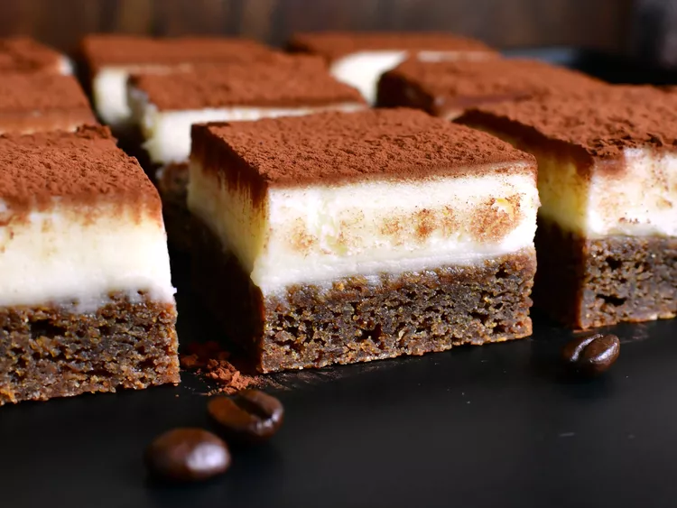

Tiramisu Blondies

Description
This dessert features layers of coffee-flavored blondies, a creamy cheese frosting, and a cocoa powder topping, reminiscent of the classic tiramisu.
Ingredients
- 1/2 cup unsalted butter, melted
- 1/2 cup firmly packed light brown sugar
- 1/4 cup white sugar
- 2 tablespoons espresso powder
- 1/2 teaspoon salt
- 1 extra-large egg, at room temperature
- 2 teaspoons vanilla extract
- 1 tablespoon coffee liqueur
- 1 1/4 cups all-purpose flour
- 1/2 teaspoon baking soda
Frosting
- 1/4 cup unsalted butter
- 1 cup confectioner's sugar
- 1/2 teaspoon vanilla extract
- 1 pinch salt
- 1 tablespoon heavy cream
- 4 ounces mascarpone cheese
- 1 tablespoon Dutch-processed cocoa powder, or as needed
Steps
- Preheat the oven to 350 degrees F. Line an 8x8-inch sqaure pan with enough parchment paper to have overhang on all sides
- In a large bowl, whisk together melted butter, brown sugar, white sugar, espresso powder, and salt until thoroughly combined. Add in egg, 2 teaspoons vanilla, and coffee liqueur and whisk until mixture is combined and lightens in color slightly, about 1 minute. Whisk in flour and baking soda until just combined. Pour batter into the prepared pan and spread into an even layer.
- Bake in the preheated oven until the bars begin to slightly pull away from the edges of the pan, 20 to 25 minutes. Remove from oven and allow bars to cool completely in the pan.
- For frosting, beat butter in a bowl with an electric mixer until smooth. Add confectioner's sugar, vanilla, and salt and beat until completely smooth and incorporated. Add heavy cream; beat for another 2 minutes. Add mascarpone, and mix on low speed until just combined.
- Spread frosting evenly over the cooled bars. Sprinkle cocoa powder evenly over the top of frosting. Refrigerate bars to firm up frosting, about 30 minutes. Remove bars from pan, cut into 16 bars, and serve.